Fluid Melt Glazes
Fluid melt glazes and over-melting, over fired, to the point that they run down off ware. This feature enables the development of super-floss and cyrstallization.
Key phrases linking here: fluid melt glazes, fluid melt, fluid-melt - Learn more
Details
Fluid melt glazes have a melt that is fluid - many thus call them "drippy glazes". Layering is popular and produces the most exciting visual effects when the top layers have high melt fluidity. On vertical walls, such glazes typically melt enough to run downward and right off the ware onto the shelf. In bowl shapes, fluid melt glazes often collect in a lake at the bottom (which, of course, comes with issues). The most extreme example of fluid melts is crystalline glazes. They contain almost no Al2O3 and the high levels of ZnO flux, these factors enable them to run to the extent that ware needs to be sitting in a bowl (where runoff accumulates in a molten lake). That being said, fluid melt glazes can also be practical on functional ware. This is because a glaze can have a melt fluidity that runs when thick, but when applied at normal thickness, it will stay put. By employing a melt flow tester, one can tune fluidity quite accurately.
To have a fluid melt, a glaze must either have much more fluxing oxides than normal for the temperature or have little or no Al2O3. In these two situations, it almost always means that the thermal expansion will be high. This is especially the case since most glazes have significant K2O and Na2O, both having super high expansions. That means crazing. Workable exceptions to this include trading KNaO for low expansion fluxes (e.g. MgO, Li2O) coupled with a high boron content. Of course, lead or bismuth can also be employed, but each has its issues. The price of lithium cannot be ignored, it is among the most expensive materials used in ceramics now. But using powerful fluxes enables maintaining the SiO2 and Al2O3 at normal levels (thus holding on to the durability).
Typically, when we speak of fluid-melt glazes, we are referring to the base transparent, without colorant. That means that most existing bright glazes could be made brighter and more brilliant by transplanting their colorants into a fluid melt base. By separating the base (from its color variations), development or adjustment efforts are simplified and can be targeted at it fitting the clay body, having good application properties, being durable and having a tolerable level of fluidity. As noted, this type of glaze is going to be more expensive. Potentially a lot more expensive! But when the brilliant surfaces and colors it can produce become evident, the
Fluid melt glazes can be glossy or matte. If they are matte, it is because crystallization occurs during cool-down. This will almost always happen if the glaze contains significant levels of metal oxide colorants. In extreme examples, a quickly-cooled piece (where insufficient time is available for crystallization) can be a brilliant deep brown or black, whereas the same piece, when slow-cooled, might be a light yellow or gold color (where tiny crystals cover the entire surface).
Fluid melt glazes are much easier to create at higher temperatures, the kiln turning ordinary fluxes into super fluxes. Cone 10R copper reds owe their character to the fluid melt. Cone 10R tenmoku glazes, likewise, have a brilliant glassy surface due to the powerful fluxing properties of iron in reduction atmospheres. At cone 10 it is easier to create craze-free surfaces because SiO2 and Al2O3 levels (which both have low thermal expansions) can be much higher. At medium temperatures, a fluid melt can be as easy as simply over-firing a low temperature (cone 04-06) glaze to cone 6 (of course it will likely craze).
Fluid melt glazes are more likely to produce the effect of varying color with varying glaze thickness (because they run and pool at abrupt contours). This is often a sought-after effect to highlight surface textures in a piece. But on flat surfaces the phenomenon can detract from the appearance, it is most likely where thickness variations occur during glaze application. Runny glazes are often low in clay content so slurry properties will not be optimal. To achieve the most even application consider creating a thixotropic slurry.
We did lots of work on a cone 6 fluid melt. Our most practical finds were G3806E and G3806F.
Related Information
A runny glaze is blistering on the inside of a large bowl

This picture has its own page with more detail, click here to see it.
This rutile glaze is running down on the inside, so it has a high melt fluidity. "High melt fluidity" is another way of saying that it is being overfired to get the visual effect. It is percolating at top temperature (during the temperature-hold period), forming bubbles. There is enough surface tension to maintain them for as long as the temperature is held. To break the bubbles and heal up after them the kiln needs to be cooled to a point where decreasing melt fluidity can overcome the surface tension. Where is that? Only experimentation will demonstrate, try dropping a little more (e.g. 25 degrees) over a series of firings to find a sweet spot. The hold temperature needs to be high enough that the glaze is still fluid enough to run in and heal the residual craters. A typical drop temperature is 100F.
An extremely runny glaze at cone 6. The runniness is manageable, it has other issues!

This picture has its own page with more detail, click here to see it.
This recipe melts to such a fluid glass because of its high sodium and lithium content (coupled with low silica levels). Reactive glazes like this produce interesting visuals but these come at the obvious cost of being runny like this. But this problem can be managed with glaze technique, a catch glaze on the outside and a liner glaze (to prevent the formation of a lake on the inside bottom (which leads to glaze compression problems). A bigger problem is that drippy glazes like this often calculate to an extremely high thermal expansion. That means food surfaces will craze badly. Another issue that underscores the value of using a liner glaze: Low silica often contributes to leaching of the lithium and any heavy metals present in the colorants.
Stop a runny glaze with another glaze!
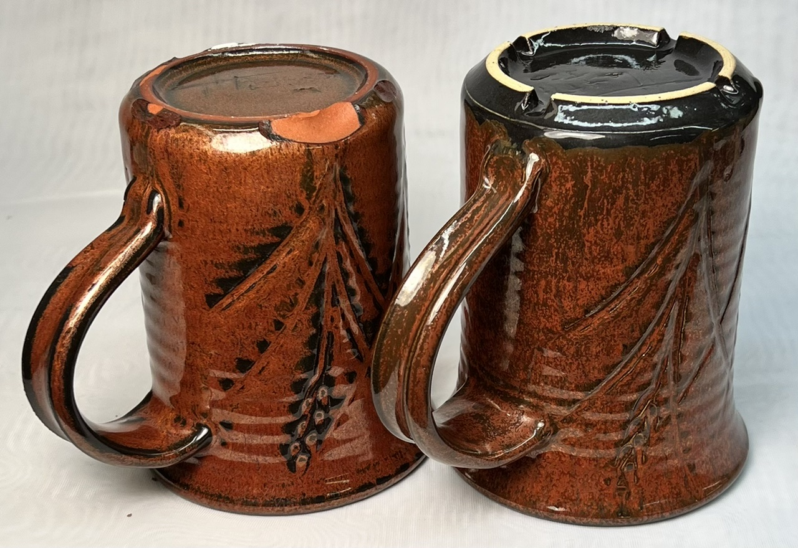
This picture has its own page with more detail, click here to see it.
This iron red cone 6 glaze, G3948A (similar to Amaco Ancient Copper), is applied thickly and runs during firing. With no countermeasures, it ends up on the kiln shelf (like the one on the left). Since this glaze breaks-to-black where thin on the edges of contours, glazing the base black seems like a natural match. The base of this was first dipped in G3914A black, up to about 1 cm (1/2 in). I then waxed over all of the black up to within 1-2mm of its edge. Then I applied the iron red by dipping in the normal way for liner glazing mugs. For this thickness of the brown the black melt is able to catch and stop it within 5mm or less.
Cone 6 Fluid-Melt Transparent Glaze - Jackpot!
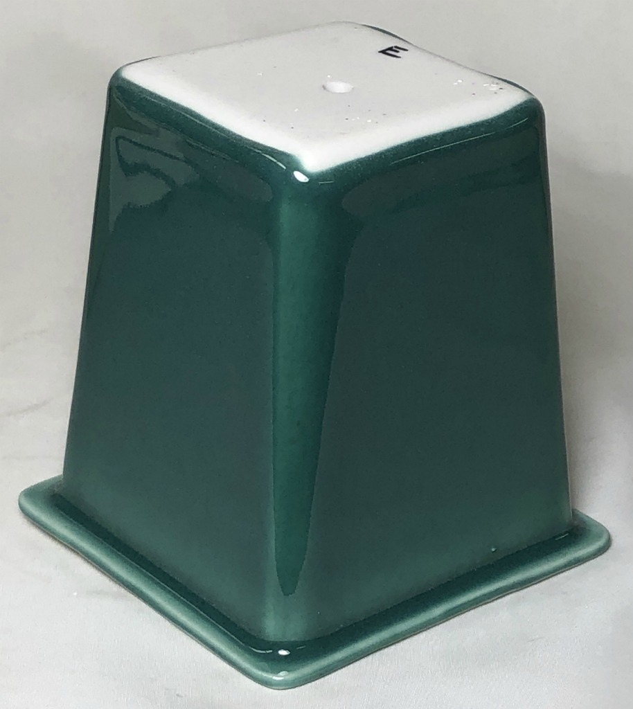
This picture has its own page with more detail, click here to see it.
In 2015 I documented a project comparing common cone 6 fluid-melt base glazes, picked a favourite (Panama Blue) and over-hauled the recipe to fix it's slurry issues and serious crazing. While fluid-melts almost run off ware when applied thick, they host stains & opacifiers to produce brilliant super-gloss surfaces. But the typical chemistry of these is susceptible to crazing, scratching and leaching. In 2019 I reformulated again, moving the thermal expansion down from 7.3 to an incredible 5.8 (the base can now survive a 325F-to-icewater test on our toughest-to-fit porcelain with no crazing). And it is melt-fluidity-controllable, durable (having 30%+ more Al2O3/SiO2) and sources Li2O, MgO and KNaO from frits. Follow the link here to see the entire history of this development effort (beware, there are multiple pages, each with many columns).
Why this copper glaze does not micro-bubble or craze:
High cone 6 melt fluidity, low surface tension, MgO
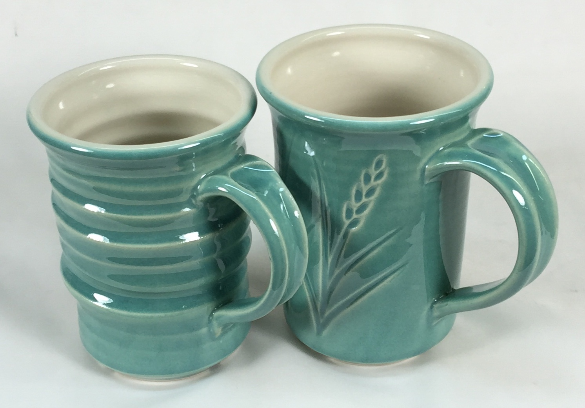
This picture has its own page with more detail, click here to see it.
This green is not just a typical transparent cone 6 glaze with 2% copper carbonate added (and 2.5% tin oxide). That outer glossy glaze accommodates the copper without micro-bubbling or crazing because of its lower melt surface tension. In such glazes, significant MgO (a super low expansion oxide) can often be tolerated without losing gloss. This is a light bulb moment. Fully 0.15 molar of MgO are present here. This is the "matting oxide"! Yet the glaze is still hyper-glossy!
The above factors are enough. But if this were used in industry, technicians would fix additional issues: The very low initial melting temperature (from 37% very early-melting frit in the recipe). That traps LOI bubbles unnecessarily. Raising the ZnO and sourcing as much of the B2O3 and KNaO as possible from later melting materials and/or frits.
The porcelains are Plainsman P300 and M370. The liner glaze is G2926B, it is a gloss but has a much lower melt fluidity, it is a functional transparent whose main job is to fit the body and be hard and durable. The outer glaze is G3806C.
An ultra-clear brilliantly-glossy cone 6 clear base glaze? Yes!

This picture has its own page with more detail, click here to see it.
I am comparing 6 well known cone 6 fluid melt base glazes and have found some surprising things. The top row are 10 gram GBMF test balls of each melted down onto a tile to demonstrate melt fluidity and bubble populations. Second, third, fourth rows show them on porcelain, buff, brown stonewares. The first column is a typical cone 6 boron-fluxed clear. The others add strontium, lithium and zinc or super-size the boron. They have more glassy smooth surfaces, less bubbles and would should give brilliant colors and reactive visual effects. The cost? They settle, crack, dust, gel, run during firing, craze or risk leaching. Out of this work came the G3806E and G3806F.
A glaze is showing unwanted streaking. Why?
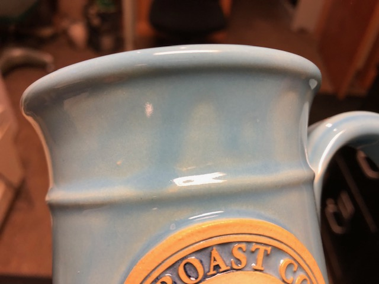
This picture has its own page with more detail, click here to see it.
This is a fluid melt cone 6 glaze with colorant added and partially opacified. It runs into contours during firing, thickening there (notice the darkening around the logo), this is a desired visual effect. However, notice that drips and runs coming down from the rim, they are producing darker streaks. This is an application issue. Glazes that fasten-in-place too slowly will drain unevenly on extraction from the bucket (after dipping). This can be solved by making a thixotropic slurry. If bisque ware is too dense, glazes have a more difficult time fixing-in-place in an even layer, especially if they have no thixotropy. If glazes lack clay (e.g. less than 15% kaolin) they do not gel as easily. Slurries containing too much gum dry slowly and drips are almost unavoidable. If the problem is too much melt fluidity, choose a more stable base glaze can really help. Just because melt fluidity is less does not mean that it will be less glossy.
Scattered crystals on a highly melt fluid zinc free glaze

This picture has its own page with more detail, click here to see it.
Crystals do not just grow on zinc glazes. These were fired by Bill Campbell. The glaze is lithium fluxed and colored with iron. There is a metallic halo around the crystal, the crystals are typically hexagonal.
Highly melt fluid glazes that run are in style but do they produce quality ware?
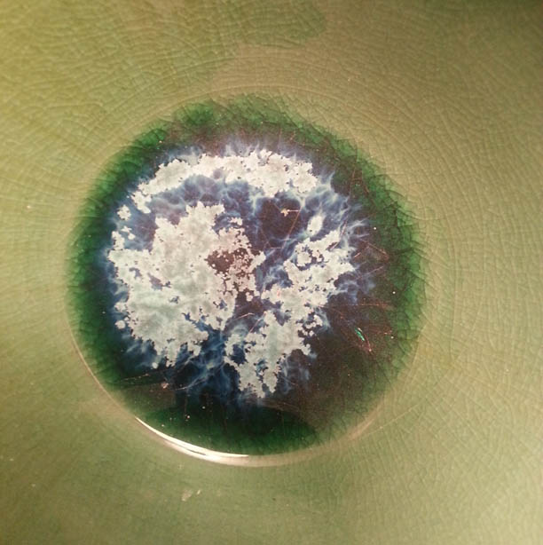
This picture has its own page with more detail, click here to see it.
This is an example of a highly fluid glaze melt that has pooled in the bottom of a bowl. While it may be decorative, this effect comes at a cost. The melt fluidity is often a product of high KNaO - so not surprisingly it is crazing like mad! This crazing weakens the piece, much, much more than you might think. when glaze are thick like this the crazing becomes cracks, they go right down through that thick layer at the bottom of this bowl. And they want to continue right down into the body - and will do so at the first opportunity (e.g. sudden temperature change, a bump). Also, fluid glazes like this are much more likely to leach (because they lack SiO2 and Al2O3). That is crystallization in the middle, who knows how chemically stable that is? Yes, these are commercial glazes having a seal that suggests they are somehow immune to leaching, but multiple different layers are interacting here, there is no possible way to predict the resistance to leaching.
High melt fluidity is required to achieve the visual effect of this glaze

This picture has its own page with more detail, click here to see it.
This is G3948A, an iron red cone 6 reactive glaze (similar to several commercially available products). The reason for the variegated surface is the high fluidity of the melt. Adequate thickness is also important, enabling it to run downward to some extent. That means this is not actually over-fired. Using it thus requires consideration of the running behavior, accommodating it in the shape of the ware on which it is used. Obviously, using this on the insides of pieces would result in pooling at the base, which would likely produce glaze compression, cracking the piece during cooling. Use on the outsides may require a catch glaze.
How to make this glass pooling effect in pottery bowls
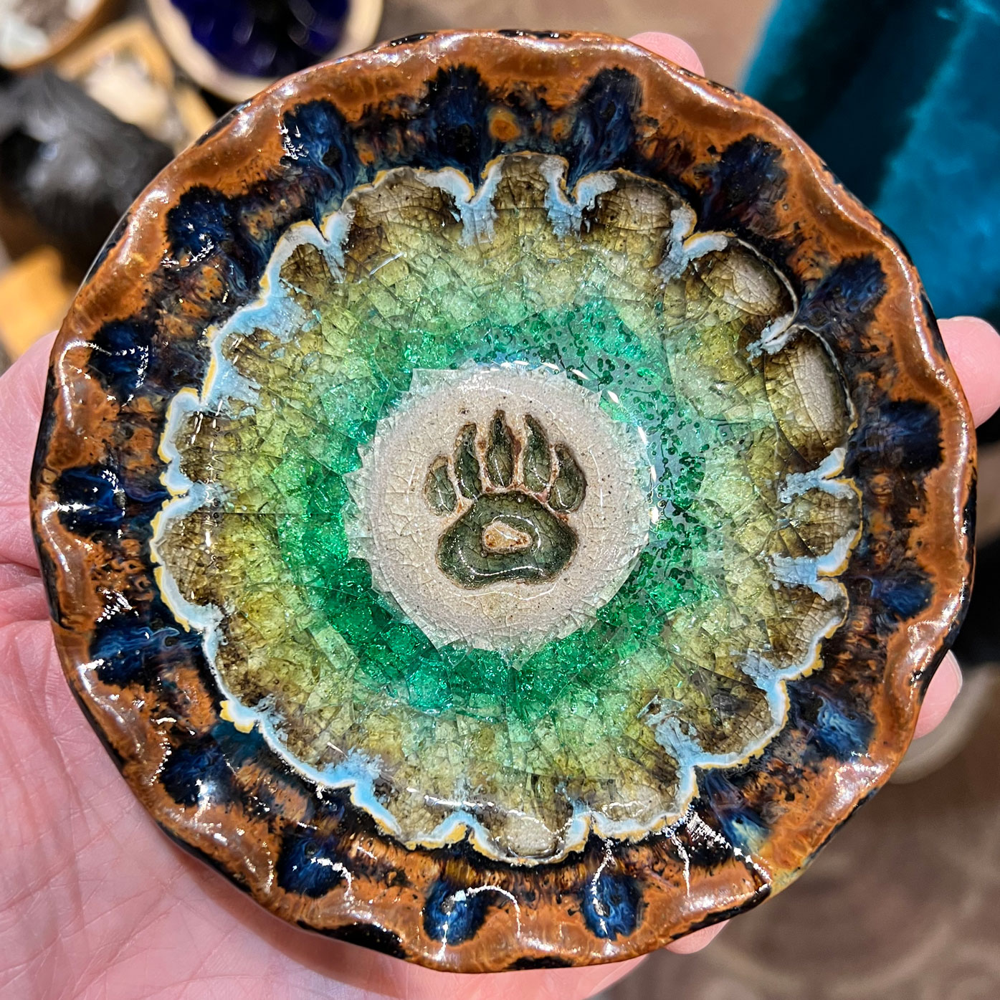
This picture has its own page with more detail, click here to see it.
These are called "Little Dishes" and are sold in tourist areas. They are made in the USA. They appear to be fired at cone 10R (because of the appearance of the glazes and bare clay on the foot). After glaze application and pigment banding, a thick layer of glass powder (glass cullet) is poured in. Since this type of glass has a high CTE it crazes thoroughly during cooling. Of course, that weakens the piece, but since these are decorative the aesthetics are considered more important. This effect can be achieved at any temperature by just using frit powder, Ferro frit 3110 will melt and craze like this at cone 04 or even lower. Suspended bubbles will be a problem, use a firing schedule with a hold to give them time to surface. Also, use a body having low LOI so that it is not generating gas bubbles. Bisque firing pieces at a higher temperature will accomplish the same (for example, if you are making these at cone 04 then bisque fire at cone 03).
Two base clear glazes with 2% copper:
One is bubbling and one is not.

This picture has its own page with more detail, click here to see it.
By itself, without copper, the G2926B recipe (right) produces a better and more durable glass (comparing the cups in the back). But a 2% copper addition, front, turns its surface to a mass of unhealed bubble-escapes. The G3808A recipe, on the left, develops much more melt fluidity, the extra mobility enables the bubbles, created by the decomposing copper, to coalesce, grow, break at the surface and heal before the melt stiffens too much.
Comparing glaze melt fluidity balls with their chemistries

This picture has its own page with more detail, click here to see it.
Ten-gram GBMF test balls of these three glazes were fired to cone 6 on porcelain tiles. Notice the difference in the degree of melt? Why? You could just say glaze 2 has more frit and feldspar. There is a better explanation, compare these yellow and blue numbers: Glaze 2 and 3 have much more B2O3 (boron, the key flux for cone 6 glazes) and lower SiO2 (silica, it is refractory). But notice that glaze 2 and 3 have the same chemistry, but 3 is melting more? Why? Because of the mineralogy of Gerstley Borate. It release its boron earlier in the firing, getting the melting started sooner. Notice it also stains the glaze amber, it is not as clean as the frit. Notice the calculated thermal expansions: The greater melting of #2 and #3 comes at a cost, their thermal expansions are considerably higher, so they will be more likely to craze. Which of these is the best for functional ware? #1, G2926B (left). Its high SiO2 and enough-but-not-too-much B2O3 make it more durable. And it runs less during firing. And does not craze.
Switching copper carbonate for copper oxide in a fluid glaze

This picture has its own page with more detail, click here to see it.
The top samples are 10 gram GBMF test balls melted down onto porcelain tiles at cone 6 (this is a high melt fluidity glaze). These balls demonstrate melt mobility and susceptibility to bubbling but also color (notice how washed out the color is for thin layers on the bottom two tiles). Both have the same chemistry but recipe 2 has been altered to improve slurry properties.
Left: Original recipe with high feldspar, low clay (poor suspending) using 1.75% copper carbonate.
Right: New recipe with low feldspar, higher clay (good suspending) using 1% copper oxide.
The copper oxide recipe is not bubbling any less even though copper oxide does not gas. The bubbles must be coming from the kaolin.
A pottery glaze that can eat through a firebrick!

This picture has its own page with more detail, click here to see it.
The melt fluidity tester was fired at cone 6. The glaze on the left is G2826A2, the 50:30:20 historically popular Gerstley Borate base recipe used for reactive and transparent glazes. The B2O3 in that glaze was 3x the normal amount in cone 6 glazes, making it so melt fluid it can eat through a firebrick!
The glaze on the right is G2926A3, an adjusted version that cuts the B2O3 level and adds SiO2 (from silica and nepheline). The result is more sane, although still very melt-fluid glaze. This is also a lesson in the chemistry that produces boron-blue: High B2O3 is not the key; my adjustment lowers it significantly. CaO/MgO is also lower, so that is not the key. The SiO2 appears to be the enabler here; it is much higher (from 2.6 to 3.48, a hugh increase). And, I am using 325 mesh silica, so it dissolves in the melt better, delivering even more SiO2. Boron blue thus seems to thrive on enough SiO2 coupled with high B2O3 and low Al2O3 with some MgO/CaO.
An example of how cobalt can precipitate in a fluid melt glaze at cone 6
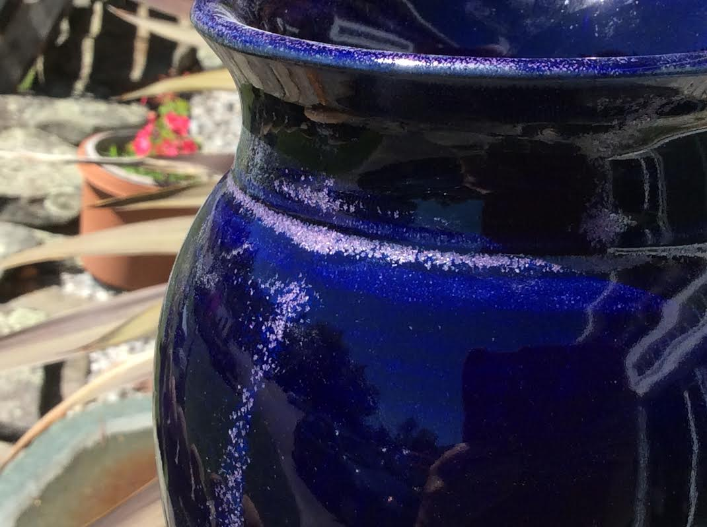
This picture has its own page with more detail, click here to see it.
This glaze has a significant amount of cobalt carbonate and during cooling the excess is precipitating out into pink crystals during cooling in the kiln. This effect is unwanted because in this case since it produces an unpleasant surface and color (the photo does not clearly show how pink it is). This problem can be fixed by a combination of cooling the kiln faster, increasing the Al2O3 content in the glaze (it stiffens the melt and prevents crystal growth) or firing lower.
Blistering in a cone 6 white variegated glaze. Why?
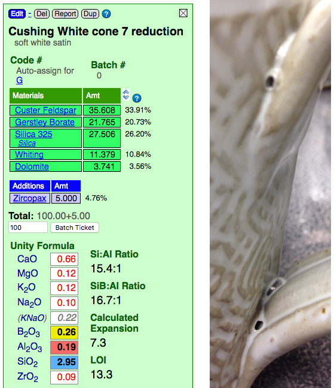
This picture has its own page with more detail, click here to see it.
This glaze creates the opaque-with-clear effect shown (at cone 7R) because it has a highly fluid melt that thins it on contours. It is over fired. On purpose. That comes with consequences. Look at the recipe, it has no clay at all! Clay supplies Al2O3 to glaze melts, it stabilizes it against running off the ware (this glaze is sourcing some Al2O3 from the feldspar, but not enough). That is why 99% of studio glazes contain clay (both to suspend the slurry and stabilize the melt). Clay could likely be added to this to increase the Al2O3 enough so the blisters would be less likely (it would be at the cost of some aesthetics, but likely a compromise is possible). There is another solution: A drop-and-soak firing. See the link below to learn more. One more observation: Look how high the LOI is. Couple that with the high boron, which melts it early, and you have a fluid glaze melt resembling an Aero chocolate bar!
Blistering in a high gloss cone 6 glaze fired at cone 7R
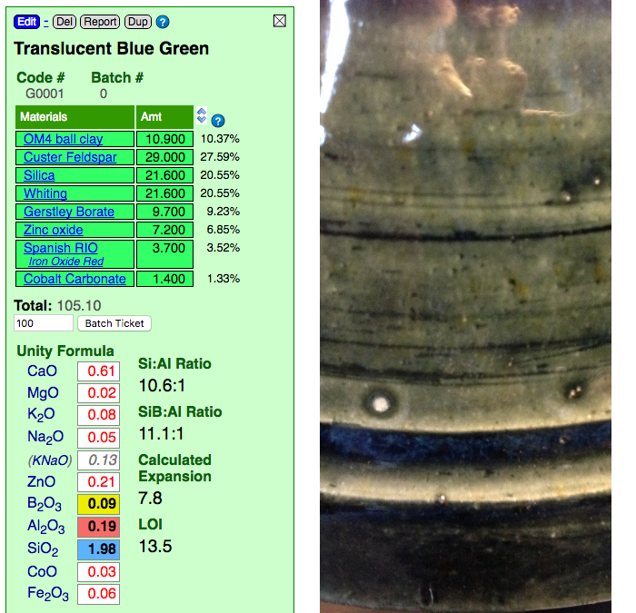
This picture has its own page with more detail, click here to see it.
The boron and zinc fluxes make the melt of this glaze highly fluid at cone 7R. That comes with consequences. Notice the Al2O3 and SiO2 in the calculated chemistry. They are at cone 04 levels. The significant ZnO increases surface tension of the melt, this helps bubbles form at the surface (like soap in water). Al2O3 and SiO2 could be added (via more clay), this would stiffen the melt so the large bubbles would be less likely to form (this glaze melts so well that it could accept significantly more clay without loss in gloss). A drop-and-soak firing is another option, in this case a drop of more than 100C might be needed (see the link below to learn more).
A fluid melt glaze bleeds much more into adjoining ones
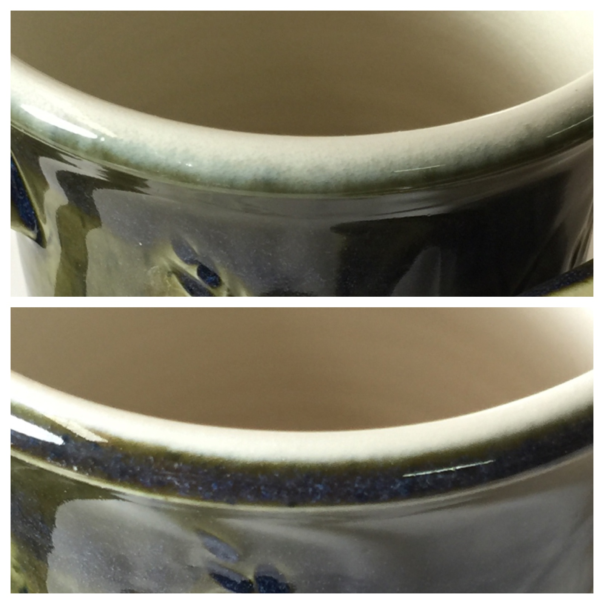
This picture has its own page with more detail, click here to see it.
The outer green glaze on these cone 6 porcelain mugs has a high melt fluidity. The liner on the upper mug is G3806C, a fluid melt high gloss clear. The liner glaze on the lower one, G2926B, is high gloss but not highly melt fluid. Thus, when both the outer and inner glazes have high melt fluidity (upper mug), they bleed together forming a fuzzy boundary. But when even one of them is not, a crisp boundary is achieved (lower mug).
Fluid melt glaze needs uneven surface to develop visual interest

This picture has its own page with more detail, click here to see it.
This is the same glaze on the outside of these two pieces. It develops the variegated deep blue character only when thick. But if it were applied thick enough on the left piece it would run off onto the kiln shelf. However the recesses in the texture-rolled surface of the one on the right have caught the flow, creating the thicknesses needed to get the color. Another factor is that the piece on the right is buff stoneware. Thus the clay contains some iron and it is bleeding into the glaze to help develop the color.
Why do these cone 04 and 6 clear glazes have so similar a chemistry?

This picture has its own page with more detail, click here to see it.
The glaze on the left (as shown in my account at insight-live.com) is a crystal clear at cone 04. The high frit content minimizes micro-bubbles. The high B2O3 melts it very well (this has 0.66 B2O3, that is three times as high as a typical cone 6 glaze). The recipe on the right is the product of a project to develop a low-thermal-expansion fluid-melt transparent for cone 6 (with added colorants fluid melts produce brilliant and even metallic results and they variegate well). While the balance of fluxes (the red numbers in the formula) is pretty different, look how similar the B2O3, Al2O3 and SiO2 levels are (yellow, red and blue backgrounded numbers in the formula), these mainly determine the melting range. That means that a fluid-melt cone 6 glaze may actually be just a low temperature glaze being overfired to cone 6.
A problem with brilliantly colored fluid-melt glazes: Micro-crystals

This picture has its own page with more detail, click here to see it.
Crystallization (also called devritrification). You can see the tiny crystals on the surface of this copper stained cone 6 glaze (G3806C). The preferred orientation of metallic oxides is crystalline. When kilns cool quickly there is simply not enough time for oxides in an average glaze to organize themselves in the preferred way and therefore crystals do not grow. But if the glaze has a fluid melt and it cools slowly through the temperature at which the crystals like to form, they will. There is another issue here also: There are tiny dimples in the surface. This is because copper carbonate was used here instead of copper oxide. During firing, it generates carbon dioxide (because it is a carbonate) that bubbles out of the melt, leaving behind dimples that may or may not heal during cooling.
A honey glaze that needs a base having more melt fluidity
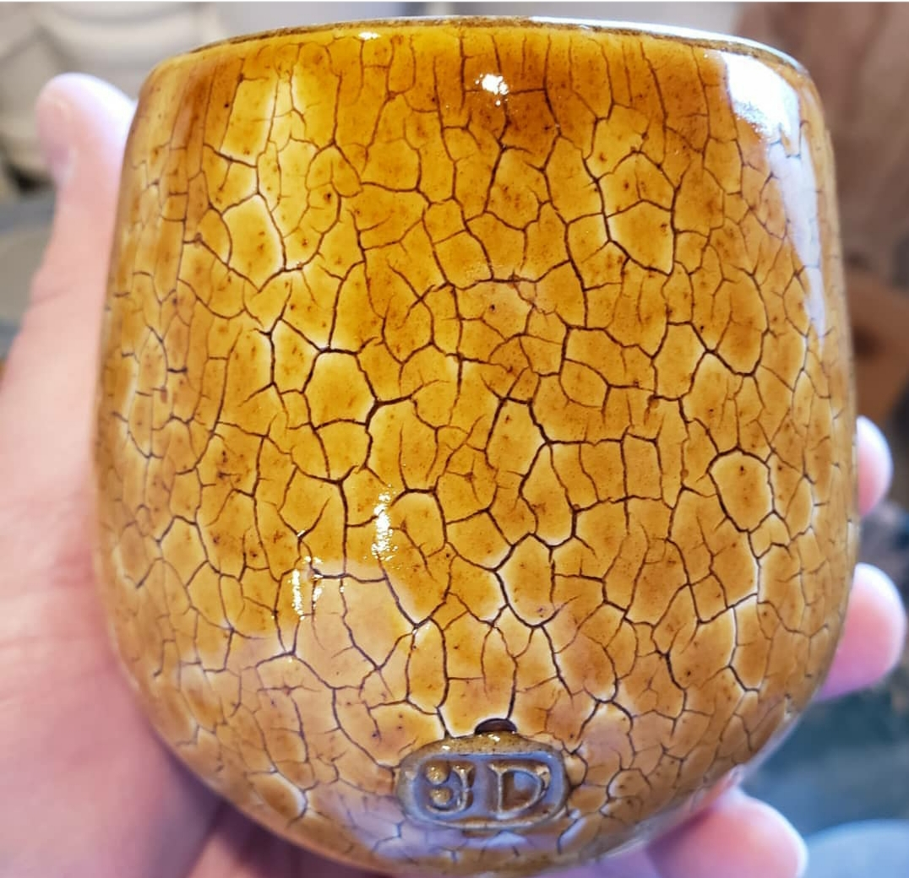
This picture has its own page with more detail, click here to see it.
This transparent glaze adds a little manganese and iron, just enough to give color, but still maintain transparency to highlight the decorative crack-network in the engobe below. However this glaze is not as brilliant and transparent as it could be. As apparent in the surface reflections, it has somewhat of an "orange peel" texture on the glass surface. This is due to a combination of factors (e.g. not enough melt fluidity, gassing of the manganese during melting, cooling the kiln too quickly). If the colorants were transplanted into a more fluid-melt transparent, this glaze could be improved. Photo courtesy of J. Decker.
Inbound Photo Links
 Another compelling reason for DIY casting bodies and glazes |
Links
| Glossary |
Melt Fluidity
Ceramic glazes melt and flow according to their chemistry, particle size and mineralogy. Observing and measuring the nature and amount of flow is important in understanding them. |
| Glossary |
Surface Tension
In ceramics, surface tension is discussed in two contexts: The glaze melt and the glaze suspension. In both, the quality of the glaze surface is impacted. |
| Glossary |
Reactive Glazes
In ceramics, reactive glazes have variegated surfaces that are a product of more melt fluidity and the presence of opacifiers, crystallizers and phase changers. |
 PayPal | No tracking, No ads, No paywall, No transient content! Just organized, concise information constantly updated and improved. Was this helpful? Consider supporting me. |
| By Tony Hansen Follow me on        |  |
Got a Question?
Buy me a coffee and we can talk 

https://digitalfire.com, All Rights Reserved
Privacy Policy